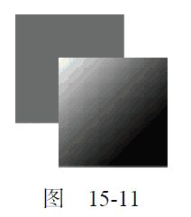
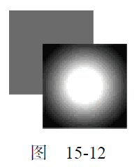

15.2.8 渐变
渐变由CanvasGradient 实例表示，很容易通过2D 上下文来创建和修改。要创建一个新的线性渐变，可以调用createLinearGradient()方法。这个方法接收4 个参数：起点的x 坐标、起点的y 坐标、终点的x 坐标、终点的y 坐标。调用这个方法后，它就会创建一个指定大小的渐变，并返回CanvasGradient 对象的实例。
创建了渐变对象后，下一步就是使用addColorStop()方法来指定色标。这个方法接收两个参数：
色标位置和CSS 颜色值。色标位置是一个0（开始的颜色）到1（结束的颜色）之间的数字。例如：
var gradient = context.createLinearGradient(30, 30, 70, 70);
gradient.addColorStop(0, "white");
gradient.addColorStop(1, "black");
运行一下
此时，gradient 对象表示的是一个从画布上点(30,30)到点(70,70)的渐变。起点的色标是白色，终点的色标是黑色。然后就可以把fillStyle 或strokeStyle 设置为这个对象，从而使用渐变来绘制形状或描边：
//绘制红色矩形
context.fillStyle = "#ff0000";
context.fillRect(10, 10, 50, 50);
//绘制渐变矩形
context.fillStyle = gradient;
context.fillRect(30, 30, 50, 50);
运行一下
为了让渐变覆盖整个矩形，而不是仅应用到矩形的一部分，矩形和渐变对象的坐标必须匹配才行。以上代码会得到如图15-11 所示的结果。
如果没有把矩形绘制到恰当的位置，那可能就只会显示部分渐变效果。例如：
context.fillStyle = gradient;
图 15-11

context.fillRect(50, 50, 50, 50);
运行一下
这两行代码执行后得到的矩形只有左上角稍微有一点白色。这主要是因为矩形的起点位于渐变的中间位置，而此时渐变差不多已经结束了。由于渐变不重复，所以矩形的大部分区域都是黑色。确保渐变与形状对齐非常重要，有时候可以考虑使用函数来确保坐标合适。例如：
function createRectLinearGradient(context, x, y, width, height){
return context.createLinearGradient(x, y, x+width, y+height);
}
运行一下
这个函数基于起点的x 和y 坐标以及宽度和高度值来创建渐变对象，从而让我们可以在fillRect()中使用相同的值。
var gradient = createRectLinearGradient(context, 30, 30, 50, 50);
gradient.addColorStop(0, "white");
gradient.addColorStop(1, "black");
//绘制渐变矩形
context.fi llStyle = gradient;
context.fillRect(30, 30, 50, 50);
运行一下
使用画布的时候，确保坐标匹配很重要，也需要一些技巧。类似createRectLinearGradient()这样的辅助方法可以让控制坐标更容易一些。
要创建径向渐变（或放射渐变），可以使用createRadialGradient()方法。这个方法接收6 个参数，对应着两个圆的圆心和半径。前三个参数指定的是起点圆的原心（x 和y）及半径，后三个参数指定的是终点圆的原心（x 和y）及半径。可以把径向渐变想象成一个长圆桶，而这6 个参数定义的正是这个桶的两个圆形开口的位置。如果把一个圆形开口定义得比另一个小一些，那这个圆桶就变成了圆锥体，而通过移动每个圆形开口的位置，就可达到像旋转这个圆锥体一样的效果。
如果想从某个形状的中心点开始创建一个向外扩散的径向渐变效果，就要将两个圆定义为同心圆。
比如，就拿前面创建的矩形来说，径向渐变的两个圆的圆心都应该在(55,55)，因为矩形的区域是从(30,30)到(80,80)。请看代码：
var gradient = context.createRadialGradient(55, 55, 10, 55, 55, 30);
gradient.addColorStop(0, "white");
gradient.addColorStop(1, "black");
//绘制红色矩形
context.fillStyle = "#ff0000";
context.fillRect(10, 10, 50, 50);
//绘制渐变矩形
context.fillStyle = gradient;
context.fillRect(30, 30, 50, 50);
运行一下
运行代码，会得到如图15-12 所示的结果。

因为创建比较麻烦，所以径向渐变并不那么容易控制。不过，一般来说，让起点圆和终点圆保持为同心圆的情况比较多，这时候只要考虑给两个圆设置不同的半径就好了。